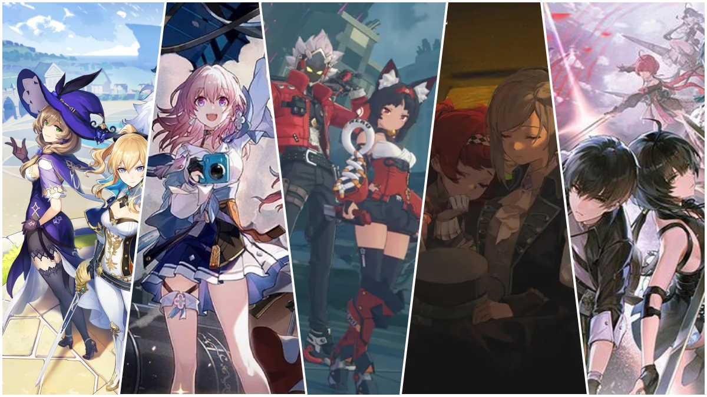
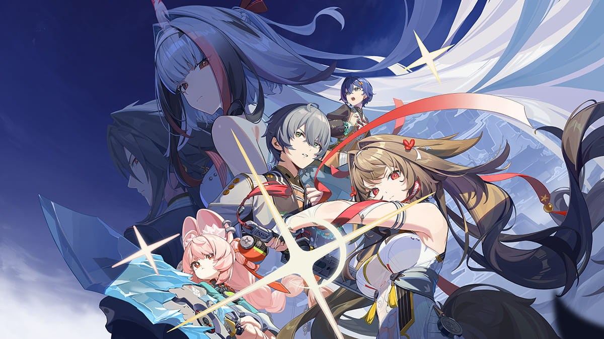
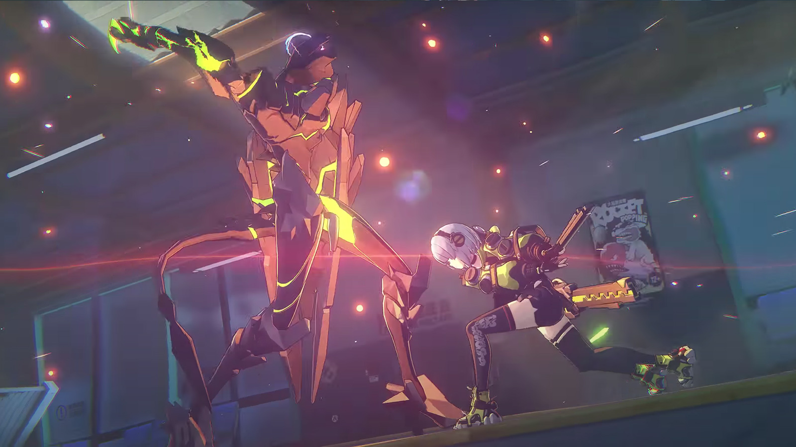
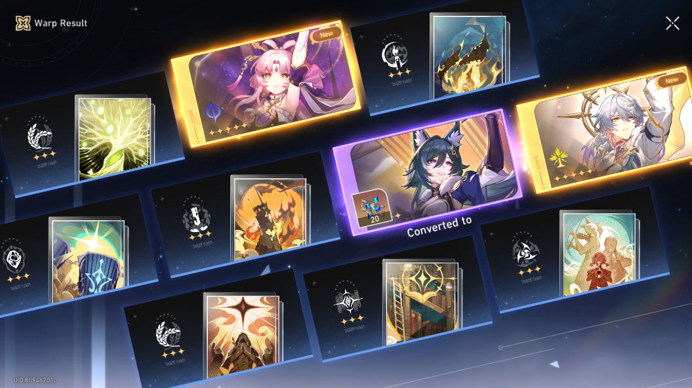
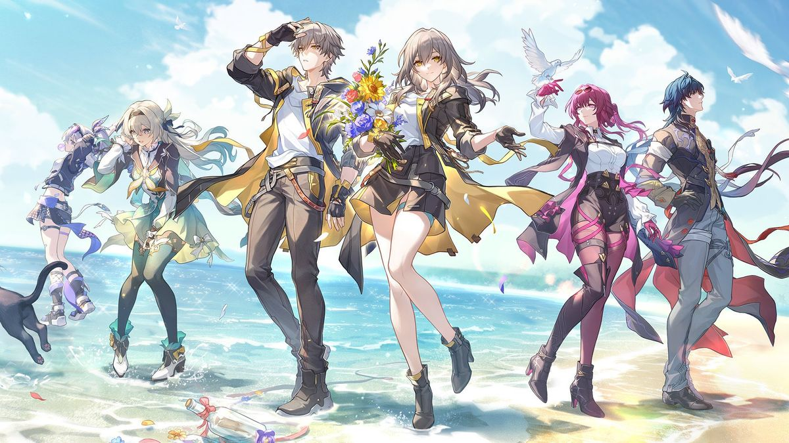
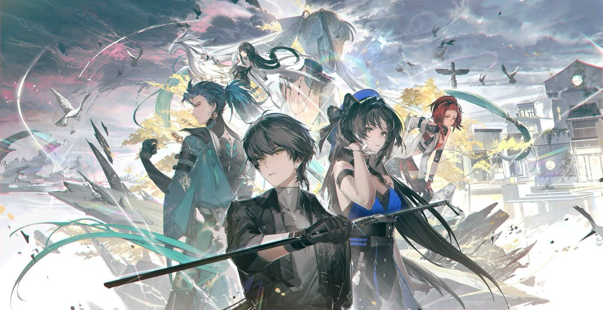
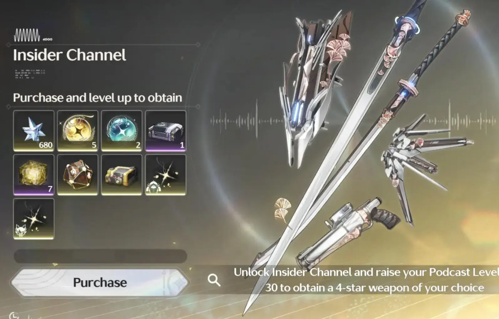
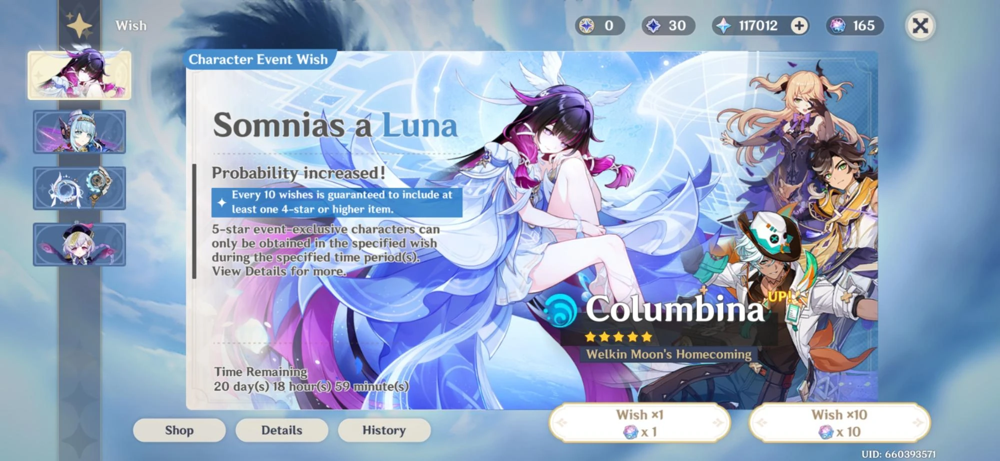

The Gacha Effect: Why We Play, Pay, & Keep Coming Back
Pulls, grind sessions, banner regrets, and everything in between — welcome to the world of gacha gaming.
Gacha games have a way of pulling players in, literally. Whether you're chasing a limited character unit or farming events for a whole week, there is something about these games that keeps your screen up until morning. This blog is for gacha players who felt the rush, cried in the losses, but still can't bring themselves to quit.
Topics
Short, focused takes on the latest releases and hidden gems.

What are Gacha Games?
For many people, gacha games have evolved from a simple pastime into something much more significant: a daily habit, a source of solace, and even a virtual community.
While their core gameplay might appear straightforward, such as gathering characters, tackling missions, and hoping for fortunate drops, those who have invested considerable time into in-game events, meticulously saved resources over extended periods, or shared the thrill of a rare acquisition with others understand that there is a richer dimension at play. These games forge lasting impressions by offering narratives to share, obstacles to conquer, and genuinely satisfying moments of exhilaration. Naturally, gacha games are not without their drawbacks. Players often encounter periods of bad luck, face formidable challenges, and experience moments that feel like deliberate tests of endurance.
Despite these hurdles, the player base remains engaged. The reason is that beneath the surface-level mechanics, gacha games provide happiness, a means of escapism, avenues for self-expression, and opportunities for social interaction. They empower players to assemble squads that reflect their individuality, explore vibrant virtual environments, and experience a sense of accomplishment on their own terms.


The Immersive Design of Gacha Games
These games, Zenless Zone Zero and Honkai: Star Rail, share a clever design approach that truly draws players into their worlds.
The secret to this deep engagement lies in how they perfectly balance exciting action with moments of calm. Combat is consistently satisfying, whether you're caught up in the thrill of the moment or carefully planning your moves. When you're not fighting, the games keep you grounded with welcoming central areas and regular activities. This is all tied together by a consistent artistic vision - the music, the visuals, and the user interface - which makes the characters you collect feel like real individuals.
This, in turn, fosters a strong connection with the game and encourages players to keep coming back. It's this mix of exciting moments and comforting routines that encourages players to dive in, get invested, and build communities around their shared adventures.

Getting What You Want
The excitement of gacha games comes from pressing the pull button and hoping to get the character or item you want most.
I experienced this in my favorite car gacha game, Racing Master. The game focuses on racing, events, open-world driving, car customization, and upgrading vehicles to make them faster. I discovered the game while searching the Play Store for a new gacha title. Winning races requires understanding car classes and choosing the right driving style. My favorite, the McLaren 720s, helped me win ranked races and events.
I also enjoy customizing and upgrading cars - spending on pulls can unlock duplicates and upgrades faster, making favorite cars more competitive.


Playing Without Spending
I know we gacha players all felt it. The screen flashes, music kicks in right after, then comes that shiny golden color we all know and love.
That "Gacha Effect" is pure excitement. However, for us Free-to-Play (F2P) players, the thrill is found in the journey. Being an F2P player isn't just about saving for pulls, it's a game of resource management. There is this unique satisfaction in skipping multiple banners for months just to guarantee that one favorite character. When we finally have enough pulls to get that character, it means that our months of grinding and saving were worth it. It's all in a day's grind, no need to swipe your mom's credit card. Because spending money won't beat tough boss fights, skills and strategy become the real mechanics. We find "hidden gem" free weapons pop up when you least expect them. Strategies grow sharper through trial and error, not from your wallet.
Beating hard endgame mechanics with budget teams takes patience, as each win arrives only after careful thinking and strategizing. Actually, there is no real way of playing the game. Whether you are a competitive strategist or a collector for aesthetics, you play however you want to play. The "Gacha Effect" isn't just about gambling, it's about the memories we build through weeks of non-stop grinding. Every character we pull is like a trophy, proving that dedication is just as valuable as every penny.

Spending Wisely
One of the biggest lessons every gacha player eventually learns is that spending wisely matters more than spending a lot.
Gacha games are designed to tempt players with limited banners, flashy animations, and the constant feeling that the next pull might finally be “the one.” Because of that, it’s easy to lose track of how much time and money you’re investing. The best way to enjoy these games without regret is by setting clear limits before you even start pulling. Treat your spending as entertainment, not as an obligation or an investment that guarantees rewards. Save your premium currency for characters or weapons you truly care about instead of chasing every new release that appears on the banner screen. Patience is one of the strongest skills a gacha player can have, especially when events and reruns eventually return.
Free-to-play players can also succeed by taking advantage of daily missions, events, login rewards, and careful planning. Most importantly, learn when to stop. Sometimes walking away after a bad streak is better than forcing yourself into more pulls out of frustration. At the end of the day, the goal is to enjoy the game responsibly while keeping the experience fun, balanced, and stress-free.


Managing Your Gacha Budget
Gacha games often compel players to spend money after failing to acquire a desired character, driven by the familiar frustration of losing a 50 percent chance or the urge for “just one more pull.” This analysis focuses on the tactics developers employ to encourage continuous spending.
Developers rely heavily on Fear of Missing Out (FOMO) through limited-time banners that pressure players into spending before opportunities disappear. My attempt to obtain Castorice demonstrates this clearly: after losing the 50 percent chance, the banner’s short duration pushed me into purchasing a monthly pack just to secure both her and her weapon before the event ended. The urgency created by these deadlines leaves little time for players to reconsider their spending decisions, making impulsive purchases far more likely. Another major tactic is power creep, where newly released characters are intentionally designed to outperform older units. Although characters may eventually return in future banners, their usefulness often declines because newer releases dominate the current meta. My Acheron, once a fully invested core member of my team, now struggles to compete with newer characters despite the time and resources spent building her.
This design creates a cycle where previous investments feel wasted, encouraging players to continue spending just to keep up with evolving game content and maintain competitive performance. Ultimately, gacha games are carefully engineered systems designed to sustain player spending. By combining FOMO with power creep, developers create a cycle in which every banner feels urgent and every older character feels replaceable. This constant pressure keeps players chasing the newest units, ensuring long-term engagement and consistent revenue for the game.
